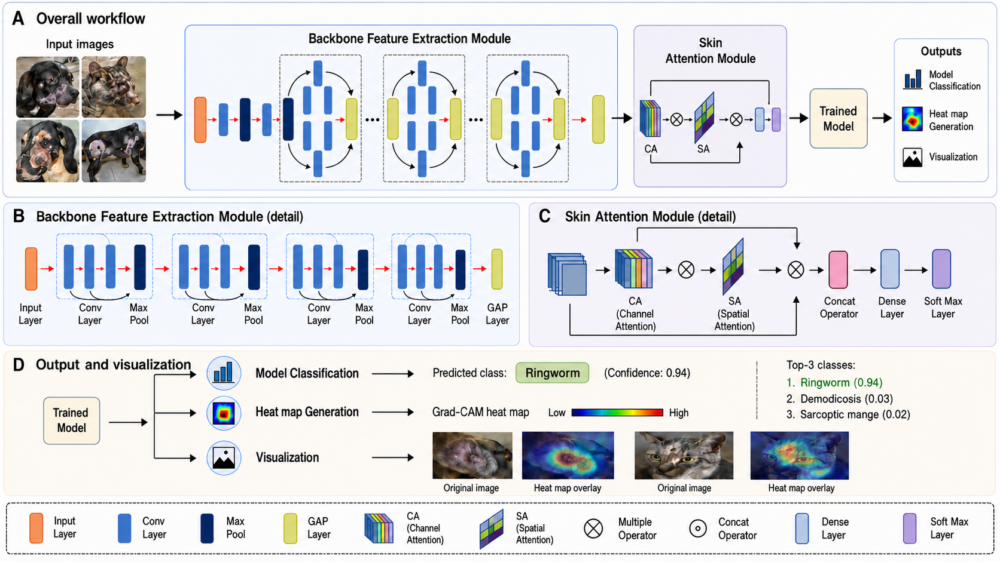

Research code and model release
A lightweight species-aware Dual Skin Attention Network for screening support in multi-species veterinary dermatology
DSAN classifies photographs into 21 skin categories across cats (6), cattle (6) and dogs (9). It is an EfficientNetV2-B0 network with 7.26 M parameters, a species head and a species-assisted disease head. The deployed form is called VetDerm-Mobile; it is the same model exported to TensorFlow Lite.
Results
Internal test and development external cohort
All values use known-species decoding, where the host species is supplied with the image. Internal test: 3,259 images, 21 classes. Development external cohort: 1,351 internet-derived images that cover 10 of the 21 classes.
| Set | n | Accuracy | Macro-F1 | Top-3 | Species accuracy |
|---|---|---|---|---|---|
| Validation | 3,254 | 96.65% | 96.77% | 99.39% | 99.51% |
| Internal test | 3,259 | 96.53% | 96.82% | 99.11% | 99.48% |
| Development external | 1,351 | 80.16% | 82.05% | 95.04% | 84.16% |
The external macro-F1 is averaged over the 10 classes present in that cohort, so it is not comparable with the 21-class internal value. The external cohort was used during model development. It measures robustness to internet photographs; it is not an independent or prospective validation.
Species decoding
What the species information does
The model can decode in three ways. Disease-only takes the best of all 21 classes. Predicted-species keeps only the classes of the species that the model itself predicts. Known-species keeps only the classes of the species supplied with the image.
| Decoding mode (development external, n = 1,351) | Accuracy |
|---|---|
| Disease-only | 71.58% |
| Predicted-species | 70.69% |
| Known-species | 80.16% |
Known-species decoding adds 8.59 percentage points. This gain comes from removing classes that are not possible for the given species. The weights and logits do not change, so it is not better visual recognition, and it depends on correct species metadata. Predicted-species decoding is slightly worse than disease-only, because the species head is wrong on about one in six external images. On the validation and internal test sets, the three modes differ by less than 0.7 percentage points.
Model
Architecture
- Backbone. EfficientNetV2-B0 (ImageNet pre-trained), 384 × 384 RGB input.
- Attention. A channel gate followed by a 7 × 7 spatial gate on the last feature map.
- Fusion. A 128-d global branch and a 64-d local convolutional branch, joined to 192-d.
- Heads. A species head. Its 64-d features are joined to the fused features (256-d) for the 21-class disease head.
Ablation (three seeds)
Removing the local branch reduced internal macro-F1 by 8.75 percentage points. The three attention variants (no attention, channel only, spatial only) and removing the global branch gave no significant change.
Backbone comparison
At a common learning rate on a reviewer-clean split (internal test n = 2,392), DSAN had the highest accuracy (96.74%) and macro-F1 (97.13%) with 7.26 M parameters, against 27.7 M for Swin-Tiny, 28.0 M for ConvNeXt V2-Tiny and 86.2 M for ViT-B/16. The difference was significant against ViT-B/16 and a plain EfficientNetV2-B0, but not against Swin-Tiny or ConvNeXt V2-Tiny. With a tuned learning rate per model, DSAN (96.66 ± 0.08%) and Swin-Tiny (96.67 ± 0.02%) were similar.

Deployment
TensorFlow Lite exports
| Export | File size |
|---|---|
| FP32 reference | 27.81 MiB |
| FP16 | 15.57 MiB |
| INT8 weight-only (recommended) | 9.95 MiB |
The INT8 weight-only export keeps 81.87% development external macro-F1 (PyTorch: 82.05%). It agrees with the PyTorch predictions on 99.69% of internal test images and 98.82% of external images. Latency was about 40.5 ms per image on a desktop CPU (WSL, XNNPACK). This is not a phone measurement; measure latency on the target device before use. The INT8 file uses weight-only post-training quantization, not calibrated full-integer quantization.
Limitations
Screening support only
- DSAN is a research prototype. It does not give a diagnosis or a treatment recommendation, and it does not replace a veterinary examination or laboratory tests.
- Labels were reviewed under veterinary supervision. Most were not confirmed by histopathology, culture, PCR, skin scraping or cytology.
- The external cohort was used during development and covers only 10 of the 21 classes. The results do not show generalisation to all classes or to clinical use.
- Grad-CAM maps were used only as a visual check. They do not show that the model looks at the lesion.
- Image data are not redistributed, because redistribution rights could not be established. The repository gives the manifests, prediction files and figure source data.